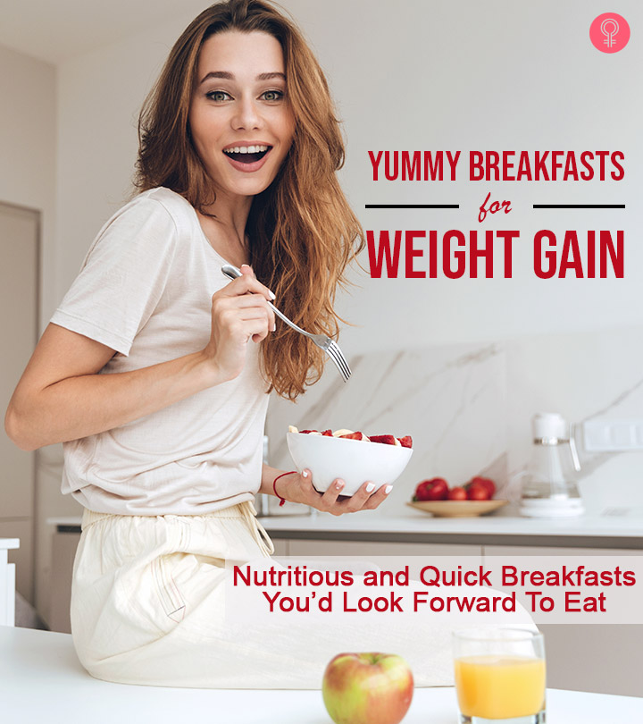

High Callories Food
Calories are the basic unit of energy found in all foods and are necessary to maintain the body's vital functions or basal metabolic rate. The amount of calories a person needs depends on factors like their age, gender, and lean muscle mass.
Eating too few calories for a prolonged period of time causes a person to become underweight (per the BMI) leading to muscle atrophy, weakened immunity, and eventually, organ failure. Conversely, eating too many calories causes a person to become overweight and obese, increasing their chances of heart disease, type II diabetes, and cancer.
People looking to gain weight in the form of lean muscle mass can aim to eat around 3000 calories per day depending on how many strength building exercises they are doing.
Healthy high-calorie foods include granola, meats, tofu, fish, avocados, milk, beans, sweet potatoes, whole grains, and nuts. In general, the daily value (%DV) for calories is 2000 calories per day, but people active with strength training or other exercises may want to consume more.
Nova Scotia on Canada’s east coast has a lot to offer visitors of all ages. Base your family in Halifax and take in the city’s outdoor attractions, such as the Public Gardens, Point Pleasant Park, and the Waterfront. Little ones will thrill at the chance of a harbour cruise aboard Theodore Too, Halifax’s famous tugboat.
Take the kids to the playgrounds styled as a submarine and a giant whale, or grab some crispy fish and chips at Bud the Spud, an iconic food truck usually parked on Spring Garden Road. While there, do some high-end souvenir shopping at Jennifer’s of Nova Scotia for tartan-themed items to take home. You may have time to head back to the waterfront for a peek at the harbour city’s tragic past and naval history at the Maritime Museum of the Atlantic.

List of High Callories food
Milk
Milk offers a mix of fat, carbohydrates, and proteins.
It is also an excellent source of vitamins and minerals, including calcium.
The protein content of milk makes it a good choice for people trying to build muscle.
One study found that after a resistance training workout, drinking skim milk helped to build muscle more effectively than a soy-based product.
A similar study involving women in resistance training showed improved results in those who drank milk following a workout.
For anyone looking to gain weight, milk can be added to the diet throughout the day. Protein shakes
Protein shakes can help a person to gain weight easily and efficiently. A shake is most effective at helping to build muscle if drunk shortly after a workout.
However, it is important to note that premade shakes often contain extra sugar and other additives that should be avoided. Check labels carefully.
A range of protein shakes is available for purchase in health food stores and online.
Rice
A cup of rice contains about 200 calories, and it is also a good source of carbohydrates, which contribute to weight gain. Many people find it easy to incorporate rice into meals containing proteins and vegetables.
Red Meat
Consuming red meat has been shown to help with building muscle and gaining weight.
Steak contains both leucine and creatine, nutrients that play a significant role in boosting muscle mass. Steak and other red meats contain both protein and fat, which promote weight gain.
While a person is advised to limit their intake, leaner cuts of red meat are healthier for the heart than fattier cuts.
One study found that adding lean red meat to the diets of 100 women aged 60–90 helped them to gain weight and increase strength by 18 percent while undergoing resistance training.
Nuts
Consuming nuts regularly can help a person to gain weight safely. Nuts are a great snack and can be added to many meals, including salads. Raw or dry roasted nuts have the most health benefits.
Nut butters made without added sugar or hydrogenated oils can also help. The only ingredient in these butters should be the nuts themselves.
A range of nut butters is available for purchase online.